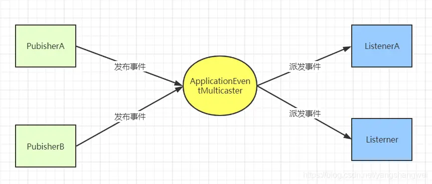

1.介绍 
事件、监听器在我们开发中会经常遇到，比如某个业务逻辑后需要通知另一个组件去执行相应的逻辑，那就可以使用事件和监听，具体的场景：服务 A 在处理完某个逻辑之后，需要通知服务 B 去处理另一个逻辑，或者服务 A 处理完某个逻辑之后，需要将数据同步到微服务 B。这种场景就可以自定义事件以及监听器来监听，一旦监听到微服务 A 中的某事件发生，就去通知微服务 B 处理对应的逻辑。
Spring中事件监听(也有说法叫事件通知)机制，其实本质是观察者模式的应用。当某个事件发生时，其会被广播出去，监听该实践的listener就会被触发然后执行响应的动作。该模式可良好应用于程序解耦，类似消息的发布订阅。
2.实现方式 2.1接口方式 事件类继承ApplicationEvent抽象类
1 2 3 4 5 6 7 8 9 10 11 12 13 @Slf 4jpublic class MyEvent extends ApplicationEvent public MyEvent (String name, Integer age) super (name + age); log.info("执行事件发送中============" ); } }
监听类实现ApplicationListener<>接口
1 2 3 4 5 6 7 8 9 10 11 12 13 14 @Slf 4jpublic class MyFirstListener implements ApplicationListener <MyEvent > @Override public void onApplicationEvent (MyEvent event) log.info("事件触发执行==========" ); System.out.println("事件：" + event.getSource()); } }
业务类注入ApplicationEventPublisher接口
1 2 3 4 5 6 7 8 @Resource private ApplicationEventPublisher eventPublisher;@Override public void testOne () log.info("执行事件发送=========" ); eventPublisher.publishEvent(new MyEvent("zxp" , 10 )); }
打印结果
1 2 3 4 2023-07-03 17:19:08.196 INFO 27048 --- [nio-8080-exec-5] c.z.p.p.service.impl.TestServiceImpl : 执行事件发送========= 2023-07-03 17:19:08.197 INFO 27048 --- [nio-8080-exec-5] com.zxp.practice.pubsub.event.MyEvent : 执行事件发送中============ 2023-07-03 17:19:08.197 INFO 27048 --- [nio-8080-exec-5] c.z.practice.pubsub.listener.MyListener : 事件触发执行========== 事件：zxp10
2.2注解方式 事件类写法与上述接口方式一样
监听类的实现，只需要在对应的监听方法上添加@EventListener注解即可
1 2 3 4 5 6 7 8 9 10 11 12 13 14 15 @Slf 4j@Component public class MyListener @EventListener (MyEvent.class ) public void onApplicationEvent (MyEvent event ) { log.info("事件触发执行==========" ); System.out.println("事件：" + event.getSource()); } }
3.监听事件异步执行 3.1异步配置 线程池配置
1 2 3 4 5 6 7 8 9 10 11 12 13 14 15 16 17 18 19 20 21 22 23 24 25 26 27 28 29 30 31 32 33 34 35 36 37 38 39 @Component public class TaskExecutorConfig implements AsyncConfigurer public static final int CORE_POOL_SIZE = 4 ; public static final int MAXIMUM_POOL_SIZE = 5 ; public static final int KEEP_ALIVE_TIME = 3 ; @Bean ("threadPoolOne" ) @Override public Executor getAsyncExecutor () LinkedBlockingDeque<Runnable> blockingDeque = new LinkedBlockingDeque<>(10 ); ThreadFactory threadFactory = Executors.defaultThreadFactory(); AbortPolicy policy = new AbortPolicy(); return new ThreadPoolExecutor(CORE_POOL_SIZE, MAXIMUM_POOL_SIZE, KEEP_ALIVE_TIME, TimeUnit.MINUTES, blockingDeque, threadFactory, policy); } @Override public AsyncUncaughtExceptionHandler getAsyncUncaughtExceptionHandler () return null ; } }
SpringBoot启动类注解
1 2 3 4 5 6 7 8 9 10 11 12 13 14 15 @EnableAsync @SpringBootApplication @ComponentScan (basePackages = {"com.zxp.practice" })@MapperScan ("com.zxp.practice.multithread.mapper" )public class MultiThreadApplication public static void main (String[] args) SpringApplication.run(MultiThreadApplication.class , args ) ; } }
3.2异步注解使用 1 2 3 4 5 6 7 8 9 10 11 12 13 14 15 16 17 @Slf 4j@Component public class MyListener @Async ("threadPoolOne" ) @EventListener (MyEvent.class ) public void onApplicationEvent (MyEvent event ) { log.info("事件触发执行==========" ); System.out.println("事件：" + event.getSource()); } }

This is copyright.